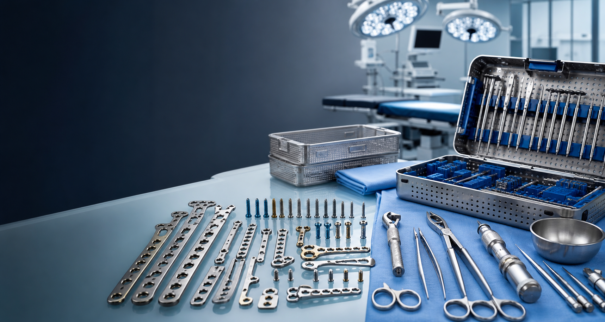

Osteosíntesis
Soluciones generales para procedimientos traumatológicos, sujetas a validación comercial.
Soluciones que salvan vidas
VOLIA S.A.S. importa y provee dispositivos médicos para traumatología y cirugía: osteosíntesis, instrumental, cajas traumatológicas e insumos con respaldo técnico para clínicas, hospitales, profesionales de la salud y pacientes.

Perfil de línea
VOLIA S.A.S. acompaña requerimientos de traumatología, osteosíntesis, cirugía e instrumental quirúrgico mediante atención directa y validación interna.
Detalles, disponibilidad y documentación se confirman directamente con el equipo de VOLIA S.A.S.
Quiénes somos
Somos una empresa familiar ecuatoriana dedicada a la importación y provisión de dispositivos médicos, especializada en soluciones para traumatología, osteosíntesis y cirugía.
Soluciones generales para procedimientos traumatológicos, sujetas a validación comercial.
Pinzas, separadores, brocas, guías, medidores, destornilladores, clamps y accesorios para quirófano.
Atención de 7:00 a 20:00 por WhatsApp, correo o llamada, con detalles de producto, cantidades y entrega.
Para quién es
VOLIA S.A.S. atiende a clínicas, hospitales, centros quirúrgicos, médicos, instrumentistas, distribuidores, compras institucionales y público en general.
Enviar requerimiento médico“ Proveer soluciones que transforman vidas, asegurando la máxima precisión, disponibilidad y respuesta rápida en cada acto quirúrgico. ”
Tecnología al Servicio de la Salud
La disponibilidad y detalles técnicos se confirman directamente con el equipo comercial.
Soluciones de fijación para diferentes necesidades traumatológicas.
Opciones quirúrgicas sujetas a validación técnica y disponibilidad.
Destornilladores, brocas, guías, medidores de profundidad, impactores y pinzas de reducción.
Sets organizados para procedimientos, transporte, esterilización y control del instrumental.
Material de apoyo para preparación, asistencia quirúrgica y manejo seguro del procedimiento.
Revisión de requerimientos puntuales bajo solicitud del médico, clínica o área de compras.
Productos destacados
Implantes para fijación y estabilización ósea en procedimientos traumatológicos.
Herramientas para asistencia, preparación, reducción y fijación durante cirugía.
Organización de instrumental para procedimientos específicos y control de inventario médico.
Solicitud comercial
VOLIA S.A.S. revisa cada solicitud según línea de producto, disponibilidad, ciudad y urgencia.
Los detalles técnicos, disponibilidad y documentación se comparten solo bajo solicitud directa.
El equipo revisa el requerimiento y confirma la mejor vía de atención según ciudad, urgencia y tipo de producto.
Clínicas, hospitales, médicos, compras y distribuidores pueden solicitar información por canal comercial.
Marcas y respaldo
VOLIA S.A.S. trabaja con marcas y líneas orientadas a calidad, innovación y soporte comercial para instituciones, profesionales de salud y distribuidores.
Catálogo técnico
Revisa los catálogos técnicos disponibles y solicita confirmación comercial para disponibilidad, documentación, condiciones y entrega.
Línea ortopédica
Información técnica de línea para revisión médica y comercial bajo confirmación del equipo VOLIA S.A.S.
Línea traumatológica
Catálogo técnico para orientar requerimientos de traumatología, instrumental y pedidos bajo solicitud.
¿Qué quieres hacer?
La página está pensada para orientar al cliente, mostrar los catálogos oficiales y dirigir cada solicitud a un canal comercial claro.
Contacta directamente al equipo comercial.
Revisa las líneas y categorías principales disponibles.
Revisa cómo se valida, confirma y coordina cada pedido.
Revisa los catálogos disponibles y solicita confirmación comercial.
Envía tu requerimiento, cantidad aproximada y ciudad.
Proceso de pedido
VOLIA S.A.S. organiza cada solicitud con validación técnica, confirmación comercial y coordinación de entrega para reducir errores en el requerimiento.
El cliente envía producto o necesidad, cantidad, ciudad y urgencia por WhatsApp, correo o formulario.
Se revisa la línea general, compatibilidad, disponibilidad y documentación aplicable bajo solicitud.
El equipo confirma alternativas, condiciones del pedido y datos necesarios para continuar con la compra.
Se programa retiro, despacho local o envío interprovincial según ciudad, disponibilidad y tipo de producto.
Documentación bajo solicitud
Según el producto, el cliente puede solicitar información técnica, fichas de producto, respaldo comercial y datos de compra por canales autorizados.
Solicitar documentaciónDatos de la empresa
Estos datos permiten que clínicas, hospitales, médicos, distribuidores y compradores puedan validar la información de contacto y solicitar cotizaciones con claridad.
Despachos coordinados desde Quito para clínicas, hospitales, médicos y distribuidores.
Despacho en Quito según disponibilidad, urgencia y punto de entrega.
Coordinación interprovincial para ciudades cercanas según ruta y requerimiento.
Envíos coordinados por courier para Guayaquil, Cuenca, Manta y otras ciudades.
Suministro de material programado o reposición interprovincial coordinada.
Cotizaciones bajo solicitud
Para evitar errores en material médico, lo ideal es enviar los datos completos: producto o necesidad, cantidad, ciudad y urgencia del requerimiento.
Soluciones para procedimientos de traumatología.
Bajo solicitudInstrumental general y traumatológico para procedimientos.
Bajo solicitudSets, cajas quirúrgicas y pedidos especiales.
Bajo solicitudDatos a solicitar
Antes de confirmar cualquier compra, VOLIA S.A.S. revisa el requerimiento y la disponibilidad.
Indicar: nombre del producto, línea general o necesidad médica.
Detalle: información clínica o comercial necesaria para orientar la solicitud.
Indicar: cantidad requerida y urgencia.
Entrega: ciudad o provincia de destino.
Indicar: nombre, institución y WhatsApp.
Opcional: RUC o datos para factura.
Preguntas frecuentes
Respuestas rápidas para médicos, clínicas, hospitales, compras, distribuidores y público en general.
Sí. La página presenta líneas generales de osteosíntesis, traumatología e instrumental relacionado.
Envía el requerimiento, cantidad, ciudad, institución y urgencia a nuestro formulario o WhatsApp. Con esos datos se prepara una respuesta comercial clara.
Sí. Se puede cotizar instrumental general, traumatológico, accesorios y cajas organizadoras según tu necesidad.
Sí. Puedes enviar la descripción o fotografía del producto para revisar disponibilidad, importación o alternativas compatibles.
Sí. Se atienden pedidos para varias provincias del país, coordinando disponibilidad, forma de envío segura y tiempos según destino.
Sí. Damos servicio tanto a público general (pacientes) como a clínicas, hospitales, cirujanos, instrumentistas y distribuidores.
Según el producto, se puede solicitar información técnica y datos comerciales necesarios para revisión interna.
No. La información comercial se confirma directamente con el equipo de VOLIA S.A.S. según requerimiento, cantidad, disponibilidad y destino.
Soporte comercial
Ejemplos de atención sin exponer datos de pacientes, médicos o instituciones.
Objetivo: confirmar disponibilidad y orientación comercial para procedimientos traumatológicos.
El equipo comercial ayuda a ordenar la información necesaria antes de coordinar despacho o alternativa disponible.
Objetivo: entregar datos comerciales y soporte para revisión del área de compras.
Se atienden requerimientos de clínicas, hospitales y distribuidores con información organizada para evaluación interna.
Objetivo: revisar pedidos especiales de instrumental, implantes o accesorios bajo solicitud.
El cliente puede enviar fotografía o descripción para revisar alternativas y disponibilidad.